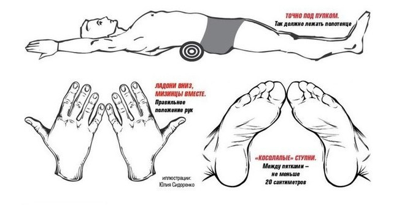

Как убрать живот и выпрямить спину за пять минут в день
Отвислый живот уберет полотенце. Японский метод коррекции фигуры меняет внешний вид за пять минут в день.
Эту простую технику разработали японские специалисты около десяти лет назад. Она позволяет вернуть скелет в естественное положение и изменить очертания тела, сделав талию тоньше, а спину – ровнее. Книга с описанием методики разошлась громадным тиражом – 6 миллионов экземпляров, но описание чудо-техники укладывается всего в несколько абзацев.
1. Скатываем из полотенца тугой валик длиной не менее 40 сантиметров и толщиной 7–10 сантиметров. Перевязываем валик крепкой ниткой, чтобы не размотался.
2. Садимся на достаточно твердую горизонтальную поверхность (мягкая кровать не подойдет, лучше лежать на кушетке, массажном столе или просто на туристическом коврике на полу), кладем свернутый валик.
3. Аккуратно опускаемся на спину, придерживая валик руками так, чтобы он оказался поперек тела под поясницей – ровно под пупком. Это важно.
4. Ноги кладем на ширину плеч и «косолапо» сводим стопы вместе – так, чтобы большие пальцы касались друг друга, а пятки были на расстоянии 20–25 сантиметров.
5. Заводим вытянутые прямые руки за голову, поворачиваем их ладонями вниз и соединяем между собой мизинцами. Поза достаточно неудобная, если вам сложно распрямить руки полностью, не страшно, пусть лежат, как получается. Главное, следить, чтобы соприкасались большие пальцы ног и мизинцы рук.
6. Лежим в таком положении 5 минут.
Если все сделано правильно, ваш скелет начнет немедленно принимать естественную для него форму – и вы ощутите, как живот чудесным образом «втягивается» внутрь тела. Однако этот процесс может быть болезненным. Если вам слишком сложно сразу выдержать пять минут, начинайте с минуты-двух, каждый день увеличивая время «отдыха на валике». Результаты станут заметны окружающим примерно через месяц.
